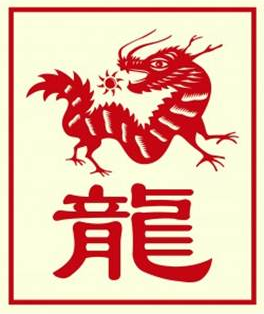

The Chinese Zodiac: Dragon

- Fixed Season: Spring
- Fixed Direction: East-Southeast
- Fixed Element: Earth-Yang
- Associated Sun Sign: Aries
Those born under the sign of the Dragon truly come to embody that fantastical creature, living their lives in the extremities of good and bad. As such, they are prone to experience great growth and crushing tragedy at numerous points throughout their life. As trying as these intense periods can be for them, however, it also provides Dragons with an enlightened view of the world and the way that everything works. Which in turn transforms a Dragon into a being of strong morals and justice, unable to endure deceit but also incapable of avoiding the deceit of others.
As a result, Dragons can struggle for periods of their lives with a loss of faith. Questioning what their purpose is, they sometime must wander for a while and endure trials to rediscover their being. By the end of it all, however, a Dragon remains strong and will be able to survive whatever life throws its way. In light of all their struggles, however, Dragons are also blessed with the greatest capacity for love of all the twelve signs. A blessing which allows them to accomplish great deeds as a member of a team, and to share their lives with friends and family alike.